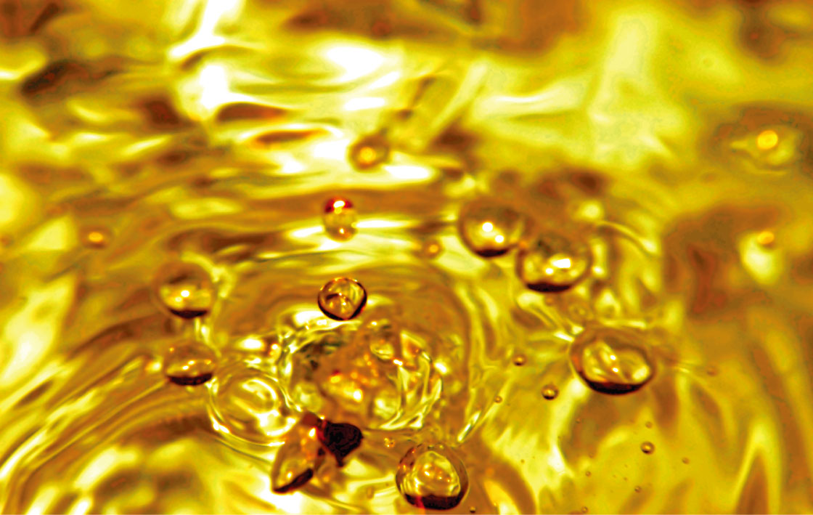
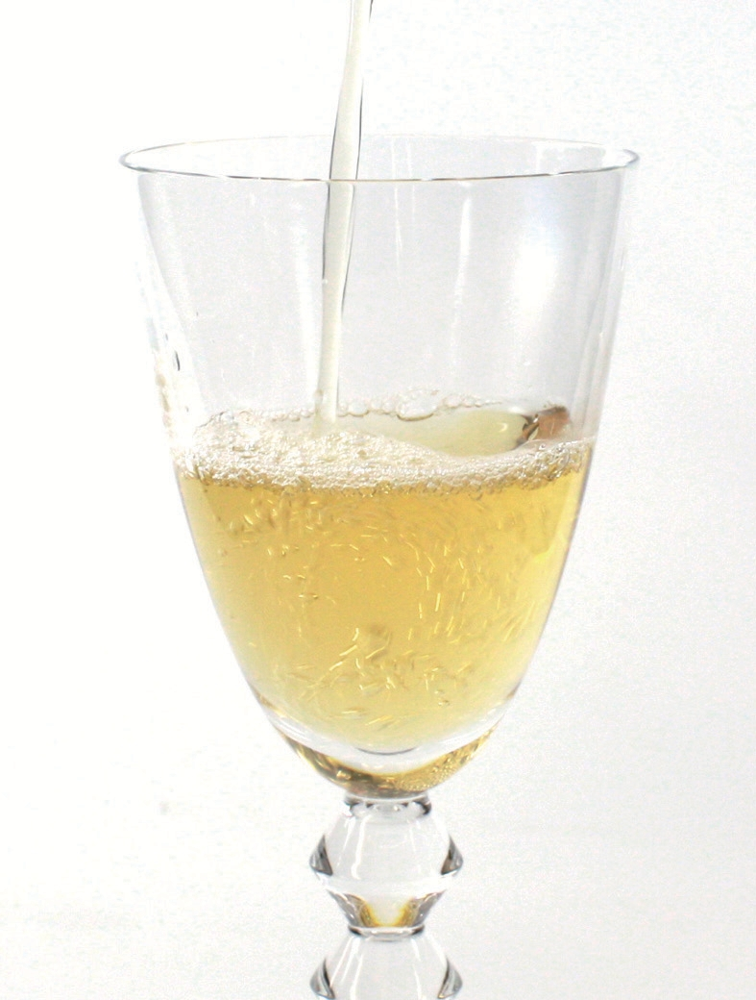
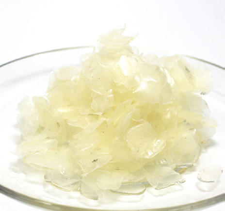
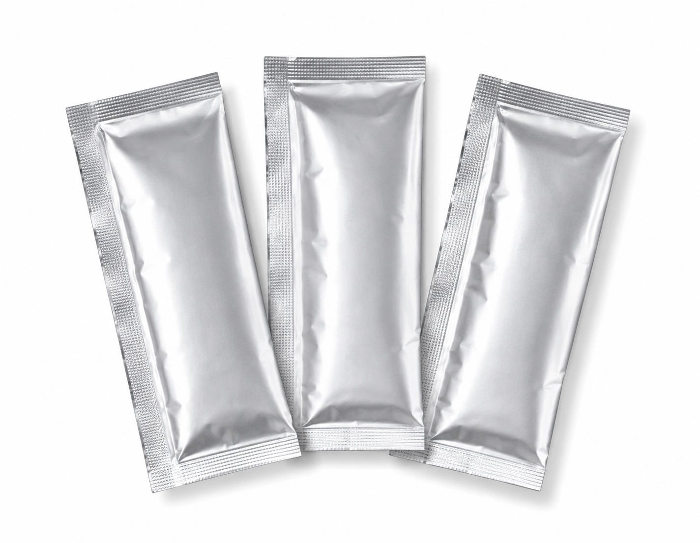
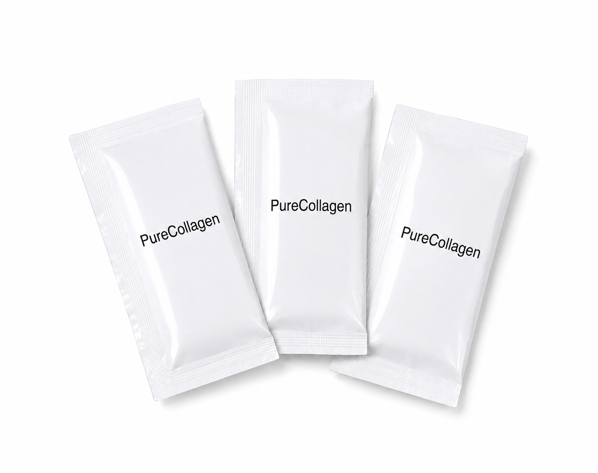

01
Health
毎日の健康を考えることは、 これからの人生を考えること。 Liquid Collagenを、 健康を支える素材のひとつとして ご提案します。
Supporting Active Life & Wellness
美容だけではなく、 健康という土台から、 その先のアクティブな毎日へ。
Liquid Collagenは、 Vitamin Factoryがご提案する 液体コラーゲンブランドです。 原料供給からOEM・ODM、 半製品・完成品まで、 幅広いご要望に対応いたします。


ABOUT
Liquid Collagenは、 美容だけを目的とした コラーゲンではありません。
健康という土台を大切にし、 毎日をより快適に、 よりアクティブに過ごすための 素材として開発されています。
臭いがほとんど気にならず、 ジュース・お茶・コーヒー・ 味噌汁・スープ・ソース・ ドレッシングなど、 様々な食品へ自然に取り入れられることも Liquid Collagenの魅力です。
CONCEPT
健康という土台から、 その先にある美しさと、 アクティブな毎日へ。
毎日の健康を考えることは、 これからの人生を考えること。 Liquid Collagenを、 健康を支える素材のひとつとして ご提案します。
美しさは、 健康という土台の上にあるもの。 美容だけに偏らず、 内側からの健康を意識した 商品づくりをサポートします。
アクティブに身体を動かす人にも。 スポーツや日々の活動を通じた 健康づくりを考える商品にも、 Liquid Collagenをご活用いただけます。
年齢や性別を問わず、 毎日を自分らしく過ごすために。 健康・美容・スポーツなど、 幅広い商品企画への展開が可能です。
DAILY LIFE
Liquid Collagenは、 特定の飲み方だけに限定されるものではありません。
ジュースやお茶、コーヒーをはじめ、 味噌汁・スープ・ソース・ ドレッシングなど、 様々な食品への活用が考えられます。
臭いがほとんど気にならないという特長を活かし、 毎日の食生活に取り入れやすい 商品設計をご提案します。
ORIGIN
Liquid Collagenは、 魚由来のコラーゲンを原料としています。
私たちは、 商品の背景にある素材そのものを お客様に知っていただくことも、 信頼につながる大切な要素だと考えています。
原料から製品まで、 どのような素材を使用しているのか。 その情報を分かりやすくお伝えすることで、 安心して商品企画にご活用いただける コラーゲン素材を目指しています。

FEATURES
商品企画の可能性を広げる、 Liquid Collagenの特長。
粉末だけではなく、 液体という形状だからこそ可能になる 商品設計があります。 飲料や食品など、 様々な商品への展開をご提案できます。
Liquid Collagenは、 臭いがほとんど気にならないことが 特長のひとつです。 毎日の食生活に取り入れやすい 商品設計につなげることができます。
健康食品・美容関連商品だけでなく、 スポーツや日常のウェルネスを意識した 商品など、 幅広いカテゴリーへの展開が可能です。
原料としての供給だけでなく、 半製品・完成品まで。 お客様のブランドや商品構想に合わせ、 柔軟な形でご提案します。

OEM / ODM
Liquid Collagenは、 原料としての供給だけではありません。
お客様のご要望に応じて、 原料ベース、 半製品、 完成品OEMなど、 様々な形での商品化を ご提案いたします。
OEM・ODMについて詳しく見る →QUALITY
Liquid Collagenの特長を、 原料・製法・性質の側面からご紹介します。
FISH COLLAGEN
魚のうろこを原材料とした フィッシュコラーゲン。 資料では、 独自の製法により 分子量5,000～7,500の 液体フィッシュコラーゲンとして 抽出しているとされています。
TASTE & ODOR
フィッシュコラーゲンでありながら、 独自の製法によって 臭いを抑えていることが 特長のひとつです。 毎日の飲み物や食品に 取り入れやすい素材として ご提案できます。
ADDITIVE FREE
資料では、 香料・着色料・保存料を 一切添加せずに 液体として抽出していると されています。 素材本来の特性を活かした 商品設計が可能です。
AMINO ACIDS
グリシン、 プロリン、 ヒドロキシプロリンを 多く含むことが 資料に示されています。 アミノ酸組成については、 日本食品分析センターによる 分析結果も資料内に掲載されています。
OUR APPROACH
私たちは、 商品の魅力を必要以上に誇張するのではなく、 原料・製法・分析結果など、 確認できる情報をもとに Liquid Collagenの特長をお伝えします。
BtoBの商品開発において、 重要なのは「何が入っているか」だけではありません。 どのような原料なのか。 どのような特長があるのか。 どのような資料で確認できるのか。 そうした情報まで含めて、 お客様の商品開発をサポートします。
EVIDENCE
保有する資料・測定結果・ モニター情報をもとに、 Liquid Collagenの可能性をご紹介します。
BONE DENSITY
資料には、 5名を対象とした 骨塩定量検査（DIP法）の 結果が記録されています。
5名中4名で骨量が増加し、 資料上の平均骨量増減率は 107.54%でした。
※これは資料に記載された 測定結果であり、 Liquid Collagenの摂取による 効果を一般化・保証するものではありません。
MONITOR
既存のプレゼン資料には、 独自のモニター調査における 参加者の感想が掲載されています。
肌のハリ・艶、 髪、 関節、 体の軽さ、 骨密度など、 様々な項目についての 感想が記録されています。
※個人の感想であり、 全ての方に同様の結果を 保証するものではありません。
ANALYSIS
アミノ酸組成分析については、 資料内に 日本食品分析センターによる 分析結果が掲載されています。
また、 栄養成分分析・有害物質試験、 細菌検査などの資料も 製品情報として確認しています。
SAFETY
製品情報シートには、 原材料として 魚鱗と水、 種別として 加水分解コラーゲン蛋白と 記載されています。
同資料では、 危険性・有害性について 分類基準に該当しないとされています。
※製品情報シートに基づく記載です。
VOICE
既存資料に掲載されている お客様の声の一部をご紹介します。
「コラーゲン特有の匂いがしない」 「液体なので溶けやすく、 ジュースなどに混ぜて使いやすい」
既存資料掲載のお客様の声
「パウダーや錠剤より ハリや潤い効果が 分かりやすかった」
既存資料掲載のお客様の声
「温かいミルクに混ぜて 飲んでいる」 「コラーゲン独特の匂いが 気にならない」
既存資料掲載のお客様の声
※上記は既存資料に掲載されている 個人の感想を要約したものです。 医学的・科学的な効果を示すものではありません。
PRODUCT DEVELOPMENT
Liquid Collagenを、 お客様のブランドに合わせた 商品へ。
原料
半製品
完成品
PRODUCT FORMS
原料としてのご提供から、 半製品・完成品まで。 商品構想に合わせた形でご提案します。
01
RAW MATERIAL
液体コラーゲン原料として、 お客様の商品開発に ご活用いただけます。
既存商品の素材変更や、 新商品の企画など、 ご希望に合わせてご相談ください。

02
SEMI-FINISHED
商品仕様や販売形態に合わせ、 半製品としての 商品化についてもご相談いただけます。
お客様のブランドや 商品コンセプトに合わせ、 柔軟に対応します。

03
FINISHED PRODUCT
パウチなどの形態を含め、 お客様ブランドの商品として 完成品までご提案します。
商品企画から製品化まで、 OEM・ODMのご相談を承ります。
OEM / ODM
Liquid Collagenを活用した 新しい商品をつくりたい。
そんなお客様の構想を、 商品企画から製品化まで サポートします。
商品企画
原料・仕様のご相談
試作・製品化
完成品OEM
CONTACT
原料供給・半製品・完成品OEM・ODMなど、 ご希望の形態に合わせて ご相談を承ります。